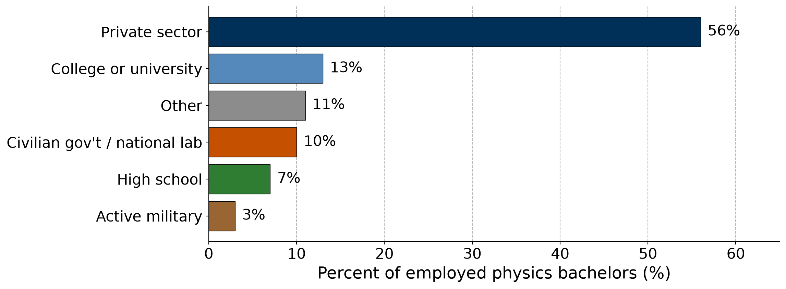
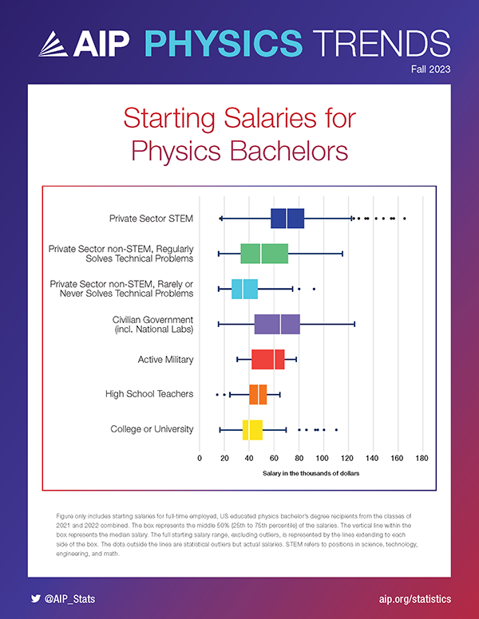
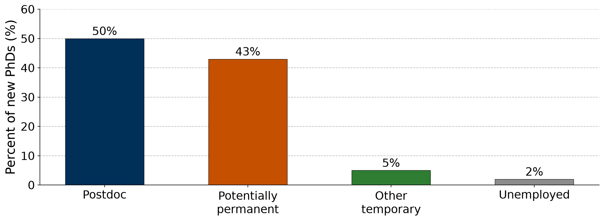

PHYS 4604 · Lecture 3
2026-09-11
| What | When | Points |
|---|---|---|
| Resume — PDF to Canvas | Tonight, Sept. 11, 11:59 PM ET | 100 (10%) |
| Fall 2026 All Majors Career Fair | Sept. 14–15 | External participation |
| Online professional presence | Sept. 25 | 4% |
| Research proposal, GRFP style | Oct. 9 | 15% |
The goal of today’s lecture: map out what people actually do with a physics, astrophysics, or applied physics degree, using national data from AIP, APS, and BLS.
More than half of new physics bachelors who take a job start in the private sector.

Classes of 2022–23 and 2023–24 · (Mulvey and Pold 2026)
| Field of private-sector job | Share |
|---|---|
| Engineering | 38% |
| Computer or information systems | 26% |
| All other fields | 36% |
Nearly two-thirds work in engineering or computing.
Only 3% of employed physics bachelors said they work in physics or astronomy.
Your competition is engineering and CS majors. Sell your problem-solving and modeling toolkit on your resume.
Classes of 2017 and 2018 · (Mulvey and Porter 2021)
| Category | Job titles reported by new physics bachelors |
|---|---|
| Engineering | Systems, Electrical, Mechanical, Test, Process, Design, Application Engineer; Engineering Technician |
| Software | Software Engineer/Developer, Data Engineer, Data Analyst, Data Scientist, ML Engineer, Consultant |
| Research | Research Assistant, Research Technician, Patent Examiner, Accelerator Operator, Physicist, Scientist |
| Education | High School Physics/Math Teacher, Middle School Science Teacher, Tutor |
| Business | Data Analyst, Research Analyst, Project Manager, Investment Banker |
As discussed last week, at the career fair (or CareerBuzz), search for these titles, not “physicist.”
Classes of 2021 and 2022 · (American Institute of Physics Statistical Research Center 2024)

Full-time, U.S.-educated graduates, classes of 2021 and 2022. (American Institute of Physics Statistical Research Center 2023)
One year after the degree
Median starting salary
| Sector | Median |
|---|---|
| Private-sector STEM | $68,500 |
| College or university | $41,600 |
Same pattern as physics bachelors: grad school or industry, with industry paying the most.
Classes of 2021–22 through 2023–24 · (Pold and Mulvey 2026)
Same core training. Your electives, research, and projects give direction.
| Degree | Natural first-job directions | How to signal it |
|---|---|---|
| Physics | Research & technical, software/data, grad school | Research, computational projects |
| Applied Physics | Engineering (systems, test, optics), national labs | Lab & instrumentation skills |
| Astrophysics | Data science, software, aerospace, grad school | Large-dataset projects, Python |
These are tendencies, not rules. Employers hire on skills and experience, so your resume matters more than the name on your diploma.
| Physicists & astronomers | |
|---|---|
| Median pay (May 2025) | $166,880 |
| Jobs (2025) | 25,600 |
| Projected growth, 2025–35 | 7% |
| Openings per year | ~1,500 |
| Typical entry education | Doctoral degree |
Largest employers of physicists
| Occupation | Median pay | Entry education | Growth | Openings/yr1 |
|---|---|---|---|---|
| Software developers | $135,980 | Bachelor’s | 10% | ~106,100 |
| Aerospace engineers | $134,960 | Bachelor’s | 8% | ~3,800 |
| Data scientists | $120,230 | Bachelor’s | 35% | ~24,800 |
| High school teachers | $72,040 | Bachelor’s | 0% | ~63,500 |
| Physicists & astronomers | $166,880 | Doctoral | 7% | ~1,500 |
BLS medians cover all experience levels*; they are not starting salaries.
Median pay as of May 2025; projected growth 2025–35. (U.S. Bureau of Labor Statistics 2026e, 2026a, 2026b, 2026c, 2026d)
One year after the degree, new physics PhDs split roughly evenly between postdocs and potentially permanent positions.

Classes of 2020–21 and 2021–22; U.S.-educated PhDs who remained in the U.S. (n = 1,680) · (Mulvey and Pold 2024)
| Sector | Postdoc | Potentially permanent |
|---|---|---|
| Academic | 72% | 15% |
| Private | 1% | 73% |
| Government | 24% | 7% |
| Other | 3% | 5% |
63% of potentially permanent positions are in fields outside physics:
Most permanent PhD jobs are in industry, not faculty positions.
Classes of 2020–21 and 2021–22 · (Mulvey and Pold 2024)
PhDs in potentially permanent positions
| % who felt… | Acad. | Private | Gov’t |
|---|---|---|---|
| PhD is appropriate background | 90 | 86 | 82 |
| Professionally challenging | 73 | 83 | 89 |
| Underemployed | 28 | 17 | 14 |
| Satisfied overall | 73 | 89 | 96 |
Postdocs
Academic prospects?
There’s about 2000/yr new PhDs and about 600/yr faculty positions.
Classes of 2020–21 and 2021–22 · (Mulvey and Pold 2024)
A physics bachelor usually starts in an entry-level or junior position and advances with experience. At the senior level, the path often splits in two:
PHYS 4604 · Fall 2026 · Georgia Institute of Technology